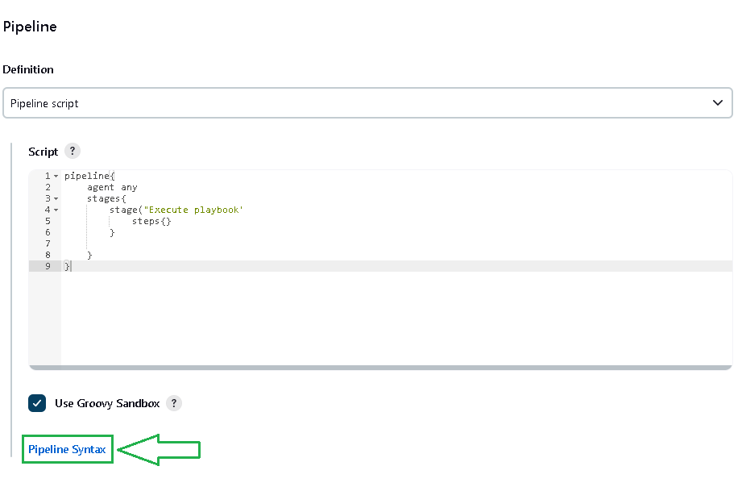
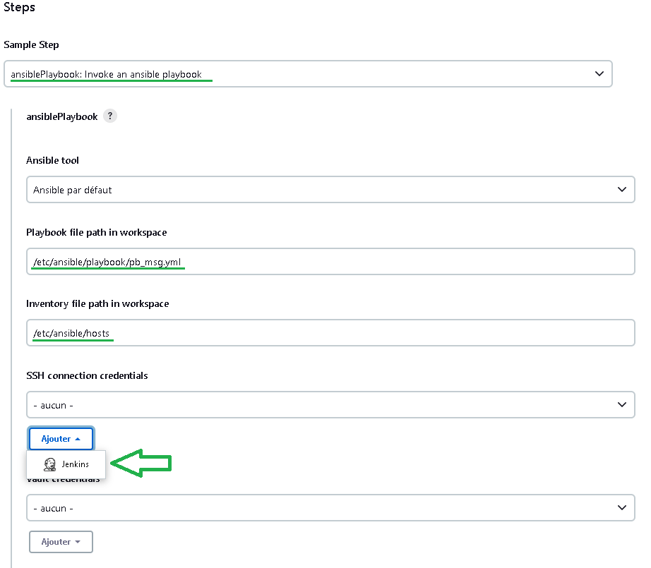
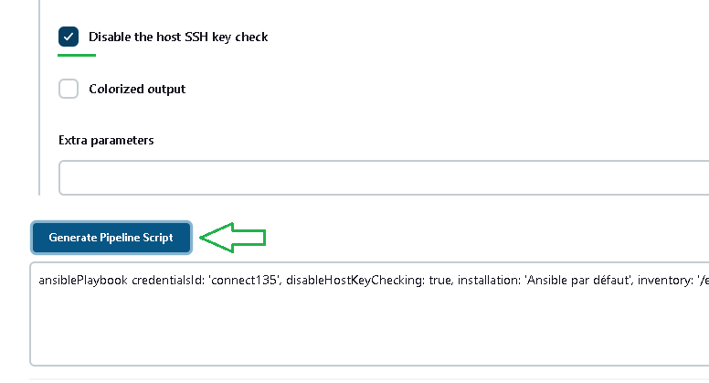

Inclure Ansible dans Jenkins
- Aller dans : Tableau de bord > Administrer Jenkins > Plugins > Available plugins
- Cherche Ansible et l'installer
- Aller dans : Tableau de bord > Administrer Jenkins > Tools
- Chercher Ansible
- Ajouter Ansible
-
- name : Ansible par défaut
- path :/usr/bin/
- Enregistrer
- Aller dans : Tableau de bord > + new item
- Saisissez un nom : Jenkis_Ansible_Test
- Sélectionner : Pipeline
- ok
- Arrivant ici: Tableau de bord > Jenkis_Ansible_Test > Configuration
- Pipeline
- Definition : Pipeline script
- script :
- Laisser en standby et aller sur Pipeline Syntax pour remplir Steps
- Remplir les champs selon architechture et bien choisir Invoke ans ansible playbook
- Remplir les champs et puis appuyer sur : ADD pour introduire la clé privé SSH
-
pour trouver la clé il suffit de tape dans le terminal :
cat ~/.ssh/id_rsa - Enregistrer et continuer sur le menu précendant en choisissant l'utilisateur dans SSH connection credentials
- Cocher : Disable the host SSH key check et générer le script
- Revenons à notre script et coller le script généré précédemment dans steps{} et enregistrer !!
- Finalement on va Lancer un build pour ce Pipeline
- Aller dans : Tableau de bord > Jenkis_Ansible_Test
- Lancer un build
- Select Build #1
- Select Console Output
- Et voilà, Mission accomplie !
Finished: SUCCESS
- Aller dans : Tableau de bord > Jenkis_Ansible_Test
Le but ici est d'excuter un playbook Ansible depuis Jenkins, voici le playbook :
---
- hosts: machine
tasks:
- name: Afficher un message
debug:
msg: "Ceci est un message de test"
...
Une fois Jenkins est installer, il faut :
pipeline{
agent any
stages{
stage("Execute playbook"){
steps{}
}
}
}




pipeline{
agent any
stages{
stage("Execute playbook"){
steps{
ansiblePlaybook credentialsId: 'connect135', disableHostKeyChecking: true, installation: 'Ansible par défaut', inventory: '/etc/ansible/hosts', playbook: '/etc/ansible/playbook/pb_msg.yml'
}
}
}
}